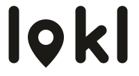
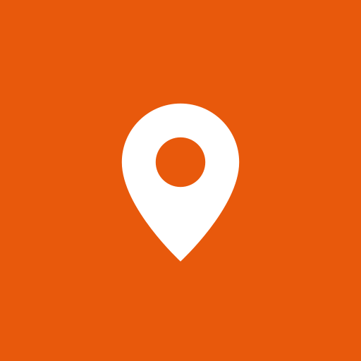

Identidad visual de Lokl
Propuesta v1 · noviembre 2026 · rama rediseno-modular
Lokl es lo de aquí: lo que vende tu vecino, el productor del pueblo y el servicio de la esquina, ordenado y fácil de encontrar. La identidad se inspira en el llano apureño: el atardecer, la sabana y el araguaney.
1. Logo
La palabra lokl en minúsculas, trazo grueso y redondeado. La “o” es un pin de ubicación: dice “local” y “cerca de ti” sin explicar nada. Está dibujado a mano en SVG (sin fuentes), pesa menos de 1 KB y se ve nítido en cualquier tamaño.

2. Símbolo e ícono de la app
El pin solo es el ícono de la app instalada, el favicon y la marca de agua en fotos compartidas.

3. Paleta propia
Tres colores de marca y neutros cálidos (arena en vez de gris frío), para que se sienta cercana y no “de banco”.
Combinaciones permitidas (legibilidad)
| Texto | Fondo | Contraste | |
|---|---|---|---|
| Blanco | Atardecer oscuro | 5.5 : 1 | Sí |
| Blanco | Sabana | 7.4 : 1 | Sí |
| Tinta | Araguaney | 10.8 : 1 | Sí |
| Sabana | Arena | 6.9 : 1 | Sí |
| Blanco | Atardecer | 3.6 : 1 | Solo títulos grandes y logo |
| Blanco | Araguaney | 1.6 : 1 | Nunca |
4. Íconos propios de Lokl
En vez de emojis (que se ven distintos en cada teléfono), un juego de íconos propios: mismo trazo redondeado que el logo, una línea, pesan unos 300 bytes cada uno y toman el color que les demos. Los nuevos se dibujan con la misma regla: cuadrícula 24×24, trazo 1.8, puntas redondas.
5. Así se vería en la app
Queso llanero duro
Ejemplo ilustrativo; nombre y precio inventados.
6. Tipografía
Fuentes del sistema del teléfono (Roboto en Android, San Francisco en iPhone). Cero kilobytes de descarga y se leen perfecto en pantallas pequeñas. El único elemento con letra propia es el logo, que va dibujado.
7. Reglas rápidas
- Atardecer es para llamar la atención: un solo botón principal por pantalla.
- Sabana es confianza: todo lo que dice “esto es seguro” (Verificado, Abierto, enlaces).
- Araguaney solo para precios y ofertas, siempre con letra oscura.
- Fondo Arena y tarjetas blancas; nada de grises fríos.
- No deformar, rotar ni cambiarle los colores al logo; dejar a su alrededor un espacio libre del alto de la “l”.
- La insignia “Verificado por Lokl” solo la otorga Lokl: es el sello de que el negocio existe.